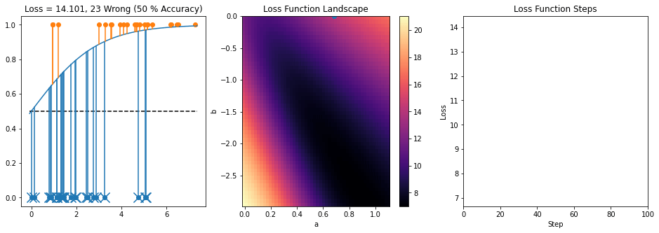
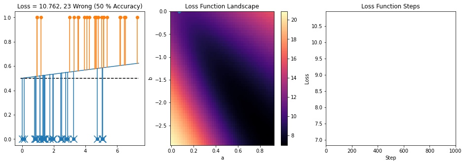
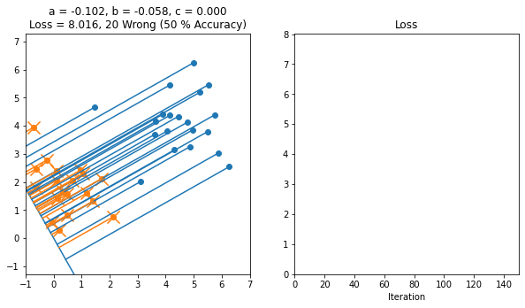
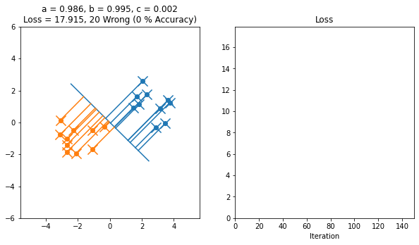
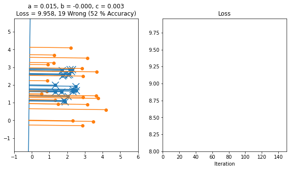

Week 10/11: Logistic Regression
Chris Tralie
The logistic function is
\[ f(x) = \frac{1}{1+e^{-x}} \]
If you use the chain rule, you can compute its derivative as
\[ \frac{d f(x)}{dx} = \frac{1}{1+e^{-x}} = \frac{e^{-x}}{(1+e^{-x})^2} \]
Actually, there's a really slick way to rewrite this as just
\[ \frac{d f(x)}{dx} = f(x)(1-f(x)) \]
Now let's consider the problem of using the logistic function to find a separator of 1D data in two classes. In this case, we're trying to find the optimal parameters a and b so that the equation
\[ f(ax + b) = \frac{1}{1+e^{-ax - b}} \]
Best fits our data. Let y be the label (either 0 or 1) that a particular input x should lead to. Then we can define the squared loss loss function as follows
\[ L(x) = \left( \frac{1}{1+e^{-ax - b}} - y \right)^2 \]
We want to minimize this function, and one fundamental optimization technique for doing so is gradient descent, whereby we compute the derivative of our loss with respect to each parameter, treating everything else as a constant. This is referred to as the partial derivative ∂ with respect to each parameter. For example, let's consider the partial derivative of our loss with respect to the parameter a. We can obtain this with multiple applications of the chain rule, noting that everything other than a is a constant
\[ \frac{\partial L(x)}{\partial a} = \frac{\partial (f(ax+b) - y)^2}{\partial a} = 2(f(ax+b) - y) \frac{\partial f(ax+b)}{\partial a} \]
\[ \frac{\partial L(x)}{\partial a} = 2(f(ax+b) - y) f(ax+b)(1-f(ax+b)) \frac{\partial ax+b}{\partial a}\]
and finally
\[ \frac{\partial L(x)}{\partial a} = 2x (f(ax+b) - y) f(ax+b)(1-f(ax+b)) \]
By a similar procedure, we find that the partial derivative with respect to b is
\[ \frac{\partial L(x)}{\partial b} = 2 (f(ax+b) - y) f(ax+b)(1-f(ax+b)) \]
You will have to subtract from each parameter some constant step times the partial derivative at each iteration. Here's what gradient descent looks like after modifying the starter code here, with a step of 0.1
This step size is a bit large and causes it to zig zag. Here is a smaller step size, which moves more slowly but which does not cause the same zig zagging:
Separating Lines in 2D
Your challenge will be to do something similar for separating lines in 2D. Here, the boundary decision boundary is described with the equation ax + by + c, so there are three parameters: a, b, and c
Here's an example of a working implementation of gradient descent starting from this file
Here's another example where the line started off in the backwards orientation
Here's an example where the data isn't separable
